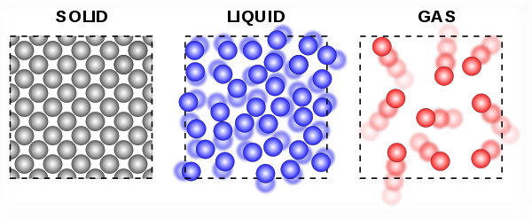

Above is a comparison between gas, liquid, and solid. It can be seen that the gas particles are noticely farther apart than the liquid particles, and blur indicates that gas particles are also moving at a faster speed.
Compared to other types of matter...
- The particles in gases move very quickly.
- The particles in gases are farther apart from each other.
Variable Definitions
- Volume: The amount of space that is occupied by a gas.
- Pressure: The force or push on the container that a gas is held.
- Temperature: The measure of kinetic energy held by a gas.